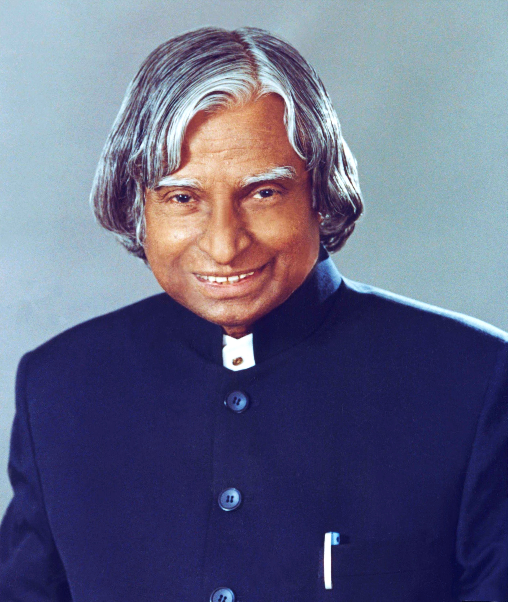

A.P.J Abdul Kalam
1931-2015
Missile Man of India
Avul Pakir Jainulabdeen Abdul Kalam (15 October 1931 – 27 July 2015) was an Indian aerospace scientist and statesman who served as the 11th President of India from 2002 to 2007. Widely revered as the "Missile Man of India" and the "People's President," he played a pivotal role in shaping India's civilian space program and military missile development.
Early Life and Education
Born into a modest Tamil Muslim family in Rameswaram, Tamil Nadu, Kalam distributed newspapers during his childhood to support his family's finances. He graduated in physics from St. Joseph’s College, Tiruchirappalli, before studying aerospace engineering at the Madras Institute of Technology (MIT).